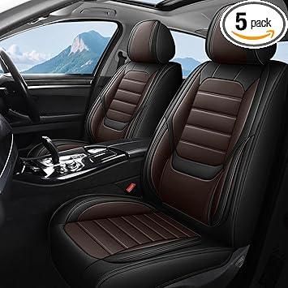
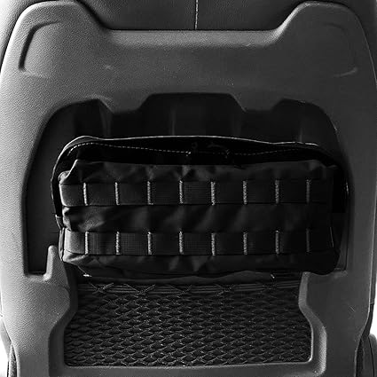
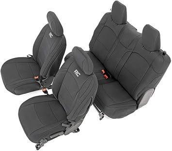

← jluseatcovers.com
Finding the Best Jluseatcovers Without Overpaying
May 2026
jluseatcovers isn't one-size-fits-all. What's perfect for one buyer can miss the mark for another. Here's how to figure out what fits you.
Practical Advice
- Set a firm budget before browsing. It's easy to creep up $50-100 comparing jluseatcovers features.
- Amazon's return policy removes most of the risk when buying jluseatcovers you haven't seen in person.
- Check "Frequently Bought Together" — it shows what extras you might need for your jluseatcovers.
What We Wish We Knew
- Panic buying on sale days — Prime Day and Black Friday jluseatcovers deals aren't always real discounts. Check year-round pricing.
- Blind brand loyalty — Your favorite brand might not make the best jluseatcovers. Stay open to better options.
Critical Factors Most Miss
- Dimensions matter — Read the actual measurements. "Large" means different things to different jluseatcovers manufacturers.
- Price trends — jluseatcovers prices fluctuate. Track your picks and buy when the price dips.
- Total cost of ownership — The cheapest jluseatcovers upfront can be the most expensive over time with replacements and accessories.
- Compatibility — Always double-check that jluseatcovers fits your specific setup before ordering.
- Warranty — Real warranty coverage (1+ year) signals a manufacturer that stands behind their product.
Tried and Tested





The Short Version
The jluseatcovers space keeps improving, and 2026 is a solid time to buy. See our full rankings at jluseatcovers.com for side-by-side comparisons.
Affiliate Disclosure: As an Amazon Associate, we earn from qualifying purchases. This doesn't affect our recommendations.